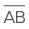
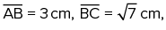
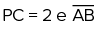
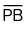
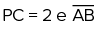
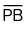

Ângulos retos são tão frequentes em nosso dia a dia que, muitas vezes, nem atentamos a eles. Olhe ao seu redor: a capa do livro, os cantos da sala, os edifícios nas ruas, as quinas das mesas e a lousa são alguns exemplos de superfícies que apresentam ângulos de 90° facilmente identificáveis.
Neste capítulo, trataremos do triângulo retângulo, o mais simples polígono que apresenta um ângulo de 90°. Muito além do famoso teorema de Pitágoras, aprenderemos outras relações que não envolvem apenas as medidas dos catetos e da hipotenusa de um triângulo retângulo, mas também outros elementos, como as projeções dos catetos e a altura relativa à hipotenusa. Para isso, utilizaremos a semelhança de triângulos, vista anteriormente.
- Você conhece alguma demonstração do teorema de Pitágoras?
- E outras relações em triângulos retângulos além dessa?
Neste capítulo será abordada a habilidade EM13MAT308.
Projeção
Antes de explorar as relações métricas em um triângulo retângulo, é necessário conhecer o conceito de projeção ortogonal de um segmento sobre uma reta, que, de modo geral, é o pé da perpendicular, traçado do ponto à reta. Por exemplo, na figura a seguir, o ponto P' é a projeção do ponto P sobre a reta r.

Já a de um segmento sobre uma reta é a projeção de todos os pontos constituintes
dele. Na situação a seguir, o segmento é a projeção do  sobre a reta s.
sobre a reta s.
Outros tipos de projeção também são possíveis. Por exemplo, você pode pensar em sua sombra como a projeção do seu corpo no chão, já que os raios de luz solar são praticamente paralelos entre si, devido à grande distância entre o Sol e a Terra.

A sombra de uma pessoa é uma projeção de seu corpo sobre o solo.
Zenza Flarini/Shutterstock.com
De posse desse novo conceito, seguiremos os nossos estudos sobre triângulos retângulos.
Elementos de um triângulo retângulo
Seja dado um triângulo ABC, retângulo no vértice A. Nesse triângulo, traçamos o
segmento de reta  perpendicular à hipotenusa de modo que o ponto H pertença ao lado
perpendicular à hipotenusa de modo que o ponto H pertença ao lado  do triângulo. A figura a seguir ilustra a situação.
do triângulo. A figura a seguir ilustra a situação.

Pela figura, podemos destacar os seguintes elementos:
- BC
= a= medida da hipotenusa do triângulo ABC;
do triângulo ABC;
- AC
= b= medida do cateto do triângulo ABC;
do triângulo ABC;
- AB
= c= medida do cateto do triângulo ABC;
do triângulo ABC;
- BH
= m= medida da projeção do cateto sobre a hipotenusa;
sobre a hipotenusa;
- CH
= n= medida da projeção do cateto sobre a hipotenusa;
sobre a hipotenusa;
- AH
= h= medida da altura relativa à hipotenusa.
relativa à hipotenusa.
Note que, nessa situação, há três triângulos retângulos. São eles: ΔABC, ΔAHB e ΔAHC. Passaremos a considerar as relações entre as medidas dos lados desses três triângulos. Para isso, recorreremos às relações de semelhança de triângulos, estudadas no capítulo anterior.
Relações métricas no triângulo retângulo
Considere o triângulo ABC, retângulo em A. Ao traçarmos a altura
 relativa à hipotenusa, nós o dividimos em dois novos triângulos retângulos: ΔAHB e ΔAHC. Ao observá-los, é
possível perceber que todos os triângulos dessa figura são semelhantes entre si.
relativa à hipotenusa, nós o dividimos em dois novos triângulos retângulos: ΔAHB e ΔAHC. Ao observá-los, é
possível perceber que todos os triângulos dessa figura são semelhantes entre si.

Perceba que os ângulos são complementares ao ângulo , portanto possuem a mesma medida. De modo semelhante, os ângulos são complementares ao ângulo , de modo que também são congruentes entre si.
Logo, analisando separadamente os triângulos, temos a seguinte situação:
Visto que todos os três triângulos possuem ângulos congruentes entre si, temos:
ΔABC ∼ ΔHBA ∼ ΔHACDessa semelhança, podemos tirar uma grande variedade de relações, que serão explanadas a seguir.
Relação 1
O produto das medidas dos catetos é igual ao produto da medida da hipotenusa pela altura relativa a ela.
ΔABC ∼ ΔHBA:
Relação 2
O quadrado da medida de um cateto é igual ao produto entre a medida da sua projeção na hipotenusa e a própria hipotenusa.
ΔABC ∼ ΔHAC:

ΔABC ∼ ΔHBA:

Relação 3
O quadrado da medida da altura relativa à hipotenusa é igual ao produto entre as medidas das projeções dos catetos sobre a hipotenusa.
ΔHBA ∼ ΔHAC:

Relação 4
O produto da medida de um cateto pela altura relativa à hipotenusa é igual ao produto entre a medida do outro cateto pela projeção do primeiro sobre a hipotenusa.
ΔABC ∼ ΔHAC:
ΔABC ∼ ΔHBA:

1
Um barco, inicialmente posicionado no ponto B do oceano, deseja fazer uma
viagem até o ponto C, a20 km de distância. O capitão do navio sabe que no ponto A, a 16 km da posição
inicial, existe uma ilha e que o ângulo BÂC mede90°. Com base nessas informações e sabendo que
o barco seguirá em linha reta pela trajetória
 , determine:
, determine:
- a menor distância entre o barco e a ilha durante toda a viagem.
- a distância que o barco deve percorrer a partir do ponto B até chegar ao ponto mais próximo da ilha.
Resolução:
-
Seja D o ponto do segmento
 mais próximo do vértice A, o ângulo
mais próximo do vértice A, o ângulo
 medirá 90°. Desse modo:
medirá 90°. Desse modo:

Note que
 é a altura relativa à hipotenusa. Assim, pelas relações métricas no triângulo retângulo:
é a altura relativa à hipotenusa. Assim, pelas relações métricas no triângulo retângulo:
20 ⋅ AD
= 16 ⋅ 12~ 20 ⋅ AD= 192~ AD= 9,6 kmPortanto, a menor distância entre o barco e a ilha durante toda a viagem é de 9,6 km.
-
Observe que , distância percorrida do ponto B ao ponto mais próximo da ilha, é a projeção do cateto sobre a hipotenusa. Assim:
20 ⋅ BD
= 16²~ 20 ⋅ BD= 256~ BD= 12,8 kmDe modo que a distância que o barco deve percorrer a partir do ponto B para chegar ao ponto mais próximo da ilha é de 12,8 km.
2
As projeções dos catetos de um triângulo retângulo sobre a sua hipotenusa diferem em 5 cm, enquanto a altura relativa à hipotenusa mede Determine a medida da hipotenusa desse triângulo.
Resolução:
Seja x a medida da menor projeção de um cateto sobre a hipotenusa desse triângulo, como ilustra a figura a seguir:

Utilizando a relação métrica que relaciona o quadrado da altura relativa à hipotenusa com as medidas das projeções dos catetos, temos:

Da equação, temos que x
Assim, a medida da hipotenusa

é de AB
Teorema de Pitágoras
Anteriormente, estudamos o teorema de Pitágoras, a relação métrica mais importante em um triângulo retângulo. No entanto, a prova desse teorema será abordada neste capítulo.
Considere um triângulo retângulo ABC, de hipotenusa
 e projeções dos catetos sobre a hipotenusa medindo m e n, conforme representado a seguir.
e projeções dos catetos sobre a hipotenusa medindo m e n, conforme representado a seguir.
Das relações demonstradas anteriormente, temos que:
b²Adicionando essas duas equações: b²
Note que podemos colocar o termo a em evidência, no lado direito da equação:
b²
Anteriormente, estudamos o teorema de Pitágoras, a relação métrica mais importante em um triângulo retângulo. No entanto, a prova desse teorema será abordada neste capítulo.
Considere um triângulo retângulo ABC, de hipotenusa
e projeções dos catetos sobre a hipotenusa medindo m e n, conforme representado a seguir.
Das relações demonstradas anteriormente, temos que:
b²Adicionando essas duas equações: b²
Note que podemos colocar o termo a em evidência, no lado direito da equação:
b²
Os entes primitivos
Assim como toda matéria é composta da combinação de átomos, as figuras geométricas são formadas por três elementos básicos, os quais chamamos de entes primitivos: pontos, retas e planos. Esses elementos não podem ser definidos por meio de outras figuras, embora possamos explicá-los com ideias intuitivas.
É importante destacarmos que esses três entes primitivos são abstrações humanas, sem existência real. Por exemplo, o ponto é uma entidade sem quaisquer dimensões físicas, enquanto a reta não apresenta largura. Apesar disso, os entes primitivos são úteis na representação de uma infinidade de modelos reais. As situações a seguir ilustram alguns deles.
Ponto
As estrelas que brilham no céu em uma noite escura são exemplos de pontos; no geral, para representá-los, são utilizadas as letras maiúsculas do nosso alfabeto. Vejamos, na figura, a identificação de três estrelas como sendo os pontos A, B e C.
Representação de estrelas como pontos.
Matsumoto/Shutterstock.com
Reta
As retas não possuem espessura e são formadas por uma infinidade de pontos alinhados. Todas as retas se estendem de modo infinito, fato que é representado graficamente por pequenas setas nas extremidades das linhas. Preferencialmente, as retas são simbolizadas por letras minúsculas do nosso alfabeto ou a partir de dois de seus pontos.
Reta r ou .
PlanilAstro/Shutterstock.com
No exemplo a seguir, podemos observar a reta r e notar que dois pontos distintos sempre determinam uma única reta que passa por eles.
Plano
O plano é uma figura bidimensional, e podemos pensar nele como sendo a superfície de uma parede ou do tampo de uma mesa, mas que se estende infinitamente. Geralmente, é nomeado por meio de uma letra minúscula do alfabeto grego. A seguir, está representado o plano a.
Três pontos distintos e não alinhados são capazes de determinar um plano. Assim, o plano da figura apresentada pode ser chamado também de plano ABC.
Definições importantes
A partir da noção intuitiva de ponto, reta e plano, algumas outras ideias são definidas. Atenção às seguintes definições.
Pontos colineares
Conjunto de pontos em que é possível traçar uma única reta que passe simultaneamente por todos eles.
Pontos coplanares
São pontos que estão contidos em um mesmo plano determinado.
Interseção de figuras
Dizemos que duas figuras planas se intersectam quando elas possuem um ou mais pontos em comum; a interseção dessas figuras é o conjunto de todos esses pontos comuns. Vejamos alguns exemplos:
Entes definidos
Na Geometria, entes definidos são as figuras que podem ser definidas por meio dos entes primitivos e suas combinações. As figuras mais básicas são compostas apenas dos entes primitivos de ponto e reta. Por se tratar de figuras importantes, com as quais você deve se familiarizar, analisaremos separadamente cada uma delas.
Semirreta
Um ponto qualquer em uma reta a divide em dois conjuntos distintos de pontos conhecidos como semirretas. Por exemplo, na situação a seguir o ponto P divide a reta r em duas semirretas opostas.
Uma semirreta possui uma orientação definida. Observe os dois casos:
Para esta situação, temos:
Segmento de reta
Dados dois pontos A e B pertencentes a uma mesma reta r, define-se o segmento de reta como o conjunto de pontos de r que pertencem ao intervalo de extremos A e B.
Note que, diferentemente de uma reta, um segmento de reta possui um início e um fim e, portanto, um comprimento limitado.
A reta que contém um segmento de reta é chamada de reta suporte. Por
exemplo, na figura anterior, a reta suporte do segmento  é a
reta r.
é a
reta r.
Agora, trataremos de uma classificação usual para segmentos de reta.
Os segmentos consecutivos são aqueles que possuem uma extremidade em comum, como é o caso dos segmentos , demonstrados a seguir.
Por fim, os segmentos adjacentes são aqueles que, ao mesmo tempo, são consecutivos e colineares, como os segmentos representados a seguir.
Já os segmentos colineares são aqueles que estão em uma mesma reta.
Quaisquer dois segmentos tomados na seguinte imagem são colineares, por exemplo,  .
.
Medida de um segmento
Os segmentos de reta podem ser medidos por uma grandeza chamada comprimento.
Este comprimento equivale à distância numérica entre os dois pontos extremos do segmento, e a
unidade em que a medida é realizada pode ser arbitrária (u.c., mm, cm, m etc.). Usualmente,
denotamos a medida de um segmento  como
como
 ou simplesmente AB.
ou simplesmente AB.
Por exemplo, para os segmentos  colineares representados a seguir, tem-se que AB 5 3 cm e BC 5 4 cm.
colineares representados a seguir, tem-se que AB 5 3 cm e BC 5 4 cm.
Comprimentos de segmentos, assim como número reais, podem ser somados e
subtraídos. Neste caso, em que os segmentos são colineares, podemos calcular o comprimento do
segmento  como .
como .
Ponto médio de segmento
Define-se o ponto médio M de um segmento como o ponto que, pertencendo ao segmento, divide-o
em duas partes iguais, de modo que AM = MB (a medida do segmento  é igual à medida do segmento
é igual à medida do segmento  ).
).
Todo segmento possui necessariamente um único ponto médio. Se dois segmentos
possuem o mesmo comprimento, são denominados congruentes. Nesse caso, temos Ë (o
segmento é congruente
ao segmento ).

Ângulo
É uma figura formada por duas semirretas que possuem uma extremidade em comum, a qual é chamada de vértice do ângulo, enquanto as semirretas são os lados do ângulo. Um ângulo divide o plano em uma região interior e outra exterior ao próprio ângulo.
Um ângulo cujos lados são as semirretas  e é definido
como ângulo
e é definido
como ângulo  .
.
Passaremos agora a estudar vários aspectos da Geometria de ângulos.
Medidas de ângulos
Ângulos são usualmente medidos em graus (°), e, por meio de um simples transferidor escolar, é possível obter tais medidas com boa aproximação.
Para encontrarmos, com o auxílio de um transferidor, a medida de um ângulo
 , precisamos seguir alguns passos:
, precisamos seguir alguns passos:
1. Sobreponha o centro do instrumento no vértice do ângulo.
2. Alinhe um dos lados do ângulo de modo que este aponte para a medida 0 do transferidor.
3. Leia a medida de no
ponto em que o outro lado do ângulo aponta a escala do transferidor.
Podemos pensar em um transferidor como uma espécie de “régua” para ângulos. Note que o modelo do transferidor acima representa metade de uma circunferência, o que corresponde a um ângulo de 180°. Desse modo, um ângulo de 1° nada mais é que uma fração que corresponde a de uma semicircunferência.
O legado de Pitágoras.
O documentário, disponível no YouTube em três partes, relaciona a elaboração dos conceitos elementares de Geometria com o desenvolvimento das civilizações da Antiguidade – notadamente babilônicos, egípcios e gregos.
Parte 1 disponível em: <http://p.p4ed.com/HGCHU>.
Parte 2 disponível em: <http://p.p4ed.com/HGCHI>.
Parte 3 disponível em: <http://p.p4ed.com/HGCHO>.
Reprodução
Assim como ocorre com os segmentos, as medidas de ângulos podem ser somadas ou subtraídas. Quando dois ângulos apresentam a mesma medida, dizemos que eles são congruentes.
1
A figura a seguir representa a medição de alguns ângulos com o auxílio de um transferidor. Determine os valores dos ângulos AÔF, BÔC, FÔH e CÔG.
Resolução:
Pelas medidas do transferidor, temos que:
med(AÔF)
med(FÔH)
med(CÔG)
Classificação dos ângulos
Os ângulos são usualmente classificados de acordo com as suas medidas. Sendo assim, denominamos ângulos agudos aqueles que possuem medidas positivas e inferiores a 90°.
Já os ângulos retos são aqueles que medem exatamente 90°. Neste caso, é comum ele ser indicado por meio de um pequeno quadrado no vértice do ângulo com um pontinho em seu centro, conforme a figura ao lado.
Os ângulos obtusos são aqueles que apresentam medidas maiores que 90° e menores que 180°.
Por fim, os ângulos rasos (ou de meia-volt são construídos a partir de duas semirretas opostas de mesma origem, medindo exatamente 180°.
Ângulos complementares e suplementares
Dois ângulos são chamados complementares quando a soma de suas medidas é 90°. Nessa situação, dizemos que um ângulo é o complementar do outro. Por exemplo, o ângulo complementar de 30° mede 60°, e o complementar de 80° mede 10°.De modo semelhante, dizemos que dois ângulos são suplementares quando as medidas somam 180°. Neste caso, um dos ângulos é o suplementar do outro. Desse modo, o suplementar de 30° mede 150°, enquanto o suplementar de 125° mede 55°.
2
Sabendo que o ângulo AÔC é reto, determine o valor de x

Resolução:
Como AÔC é reto, temos:
med(AÔC)
Assim, med(AÔC)
2x
3
Dado que t é uma reta, determine as medidas dos ângulos MÔN e NÔP.

Resolução:
O ângulo MÔP é raso, logo med(MÔP)
Como med(MÔN)
4x
Por fim, é possível calcular as medidas dos ângulos MÔN e NÔP.
med(MÔN)
med(NÔP)
4
Determine o ângulo cuja medida supera a de seu complementar em 12°.
Resolução:
Seja a o ângulo em questão, o complementar de medida α tem medida dada
por 90°
Desse modo, como α excede seu complementar em 12°, temos:
α
Portanto, o ângulo que supera o seu complementar em 12° é o ângulo que mede 51°.
5
A medida do suplementar do ângulo que mede x excede o dobro da medida do complementar de x em 28°. Determine x.
Resolução:
Primeiramente, vamos organizar as informações.
Medida do ângulo procurado: x
Medida do suplementar desse ângulo: 180°
Dobro da medida do complementar desse ângulo: 2 (90°
Assim, pelas informações do enunciado:
(180°
x
Ângulos consecutivos e adjacentes
Dois ângulos são consecutivos quando possuem um lado em comum e são adjacentes quando são consecutivos e não possuem pontos internos em comum.
AÔB e BÔC são consecutivos ( é o lado comum) e adjacentes. AÔB e AÔC são consecutivos ( é o lado comum), mas não adjacentes.
Ângulos opostos pelo vértice
O cruzamento de duas retas concorrentes determina quatro ângulos. Observe a situação a seguir:
Note que os ângulos de medidas a, b, x e y possuem o vértice em comum. Além disso, esses ângulos se opõem dois a dois: dizemos que os ângulos de medidas a e b são opostos pelo vértice, assim como os ângulos de medidas x e y também o são.
Um teorema importante e que será usado com frequência diz que os ângulos opostos pelo vértice possuem a mesma medida. Ou seja, para a figura apresentada, temos que a 5 b e x 5 y.
A prova desse teorema é bastante simples. Note, por exemplo, a seguinte situação em que os ângulos que medem x e y são opostos pelo vértice.
Observe que os ângulos AÔB e CÔD são rasos. Assim:
med(AÔB) 5 180° ~ x 1 a 5 180° (I)
med(CÔD) 5 180° ~ y 1 a 5 180° (II)
Igualando as equações (I) e (II):
x 1 a 5 y 1 a ^ x 5 y
Portanto, ângulos opostos pelo vértice possuem medidas iguais.
6
Determine os valores de x e y.

Resolução:
Note que os ângulos de medidas 3y e 4y
3y
Como os ângulos de medidas 2x
2x
Portanto, x
Bissetriz
Define-se como bissetriz de um ângulo a semirreta que divide o ângulo ao meio, ou seja, em duas partes de mesma medida.
Na situação da figura, note que a semirreta tem origem em O, ponto que é o vértice do ângulo AÔC. Além
disso, os ângulos AÔB e BÔC são congruentes. Portanto, dizemos que  é a bissetriz do ângulo AOC.
é a bissetriz do ângulo AOC.
Por questões de facilidade de representação, é comum que pares de ângulos congruentes sejam representados por pequenos traços iguais nas marcas curvas próximas aos seus vértices. Por exemplo, na figura ao lado, o ângulo NÔP é congruente ao ângulo PÔQ, enquanto MÔN é congruente a QÔR
1
Nas situações a seguir, a semirreta  é bissetriz do ângulo AÔC. Determine os valores das
variáveis em cada um dos itens a seguir.
é bissetriz do ângulo AÔC. Determine os valores das
variáveis em cada um dos itens a seguir.


Resolução:
-
Como
 é bissetriz do ângulo
AÔC, então med(AÔB)
é bissetriz do ângulo
AÔC, então med(AÔB)= med(BÔC). Assim:3x
= 5x– 24° → x= 12° -
Como AÔB e BÔC são congruentes:
x
+ 20°= y– 10° → x= y– 30° (I)Note que o ângulo AÔD é raso. Assim:
y
– 10°+ x+ 20°+ x+ 2y= 180° → 3y+ 2x= 170° (II)Substituindo (I) em (II):
3y
+ 2(y– 30°)= 170° → 5y= 230° → y= 46°Por (I):
x
= y– 30°= 46°– 30°= 16°Portanto, x
= 16° e y= 46°.
2
Os ângulos adjacentes AÔB, BÔC e CÔD são tais que med(AÔB)
Resolução:
Sejam as bissetrizes dos ângulos AÔC e BÔD respectivamente. A figura a seguir traz a situação descrita.
Como é bissetriz de AÔC: 22°
Adicionando as equações (I) e (II):
2x
Dados a e b, números reais positivos, definimos sua média geométrica x como a solução da equação , ou, desenvolvendo a equação, a média geométrica de a e b é calculada como Note que as relações métricas no triângulo retângulo apresentam esse tipo de relação. Por exemplo, a partir da relação entre a altura relativa à hipotenusa e as projeções dos catetos sobre a hipotenusa, temos: Assim, podemos dizer que a altura relativa à hipotenusade um triângulo retânguloé a média geométrica das projeções dos catetos sobre a hipotenusa.
Como m
Logo, temos o resultado desejado: a²
Portanto, obtemos a última e mais importante relação em um triângulo retângulo:
A soma dos quadrados dos catetos é igual ao quadrado da hipotenusa.Há inúmeras outras provas para o teorema de Pitágoras, e, no capítulo relacionado às áreas das figuras planas, veremos mais uma.
3
Uma lâmpada está presa ao teto por dois barbantes, perpendiculares entre si, como mostra a figura. Determine a distância da lâmpada ao teto, sabendo que os barbantes medem 9 cm e 12 cm.

Resolução:
Sejam A e B os pontos em que os barbantes estão presos ao teto, C o ponto em que a lâmpada está presa ao barbante e CD a distância entre a lâmpada e o teto.
4
Dada a situação representada na figura a seguir, determine os valores das medidas indicadas por x, y e z.
Resolução:
Utilizando o teorema de Pitágoras no ΔAHC e por meio da relação métrica que envolve as projeções dos catetos e a altura relativa à hipotenusa, temos:
Por fim, aplicando Pitágoras no ΔAHB:
1
Considerando a figura a seguir, determine qual das seguintes proporções é falsa:
2
Uma criança, cujo nível dos olhos está a 1 metro do chão, consegue visualizar completamente uma árvore sob um ângulo de visão de exatos 90°. Determine a altura da árvore sabendo que a criança está a 2 metros de distância dela. Utilize a aproximação .
3
IFPE 2014 Uma formiguinha encontra-se no ponto A de um cubo com 10 cm de aresta, conforme a figura a seguir. Ela tem a capacidade de se deslocar em qualquer região da superfície externa do cubo e deseja chegar ao ponto B. Para isso ela deverá percorrer a diagonal da face superior desse cubo, atingir o ponto C e, por fim, caminhar sobre a aresta até chegar a B.

- 20
- 30


4
Os catetos de um triângulo retângulo medem 7 cm e 24 cm. Com base nessas informações, determine a medida:
- da hipotenusa desse triângulo.
- da projeção do maior cateto sobre a hipotenusa.
- da projeção do menor cateto sobre a hipotenusa.
- da altura relativa à hipotenusa.
5
Dada a figura a seguir, determine a medida x indicada.
6
Determine pelo menos seis relações métricas para os elementos indicados na figura a seguir.
7
A altura relativa à hipotenusa de um triângulo retângulo mede 12 cm, e uma das projeções dos catetos sobre a hipotenusa, 16 cm. Assim, determine a medida dos catetos desse triângulo.
8
A figura a seguir ilustra a piscina de um clube.
A partir das informações apresentadas, determine:
- o comprimento total da piscina.
- a profundidade máxima da piscina.
9
Duas crianças, afastadas 50 metros uma da outra, observam a mesma pipa pairando no ar. Sabe-se que a distância da primeira criança em relação à pipa é de 30 metros e, da segunda, 40 metros. Considerando desprezível a altura das crianças, determine a altura a que a pipa está do solo no momento dessa observação.
9
Um enfeite natalino é suspenso no ponto C por um barbante, preso pelos pontos A e B ao teto de uma casa, conforme a ilustração.

Sabendo que a distância do enfeite ao teto é de 12 cm e que a distância entre A e B é de 25 cm, determine o comprimento total do barbante.
1
IFSP Com uma trena e um esquadro em mãos, uma pessoa, em A, pode determinar a distância em que se encontra da base de uma árvore do outro lado do rio. Para tanto, fixa e estica um barbante de 39 m, de A até um ponto C qualquer, de modo que a linha visada AP seja perpendicular à linha AC, onde marca um ponto B a 3 m de C. Em seguida, a partir de C, ela caminha perpendicularmente à linha AC, afastando-se do rio e, quando vê B alinhado com a árvore, marca o ponto D. Constata, então, que a linha CD tem 4 m. Assim, a distância d indicada na figura, em metros, é igual a:
- 24,25.
- 27,00.
- 29,25.
- 48,00.
- 52,75.
2
UEL-PR 2019 Convenciona-se que o tamanho dos televisores, de tela plana e retangular, é medido pelo comprimento da diagonal da tela, expresso em polegadas. Define-se a proporção dessa tela como sendo o quociente do lado menor pelo lado maior, também em polegadas. Essas informações estão dispostas na figura a seguir.
Suponha que Eurico e Hermengarda tenham televisores como dado na figura e de proporção . Sabendo que o tamanho do televisor de Hermengarda é 5 polegadas maior que o de Eurico, assinale a alternativa que apresenta, corretamente, quantas polegadas o lado maior da tela do televisor de Hermengarda excede o lado correspondente do televisor de Eurico.
- 2
- 3
- 4
- 5
- 6
3
EEAR-SP 2019 Se ABC é um triângulo retângulo em A, o valor de n é

- 22
- 16
4
Determine as medidas das incógnitas indicadas em cada uma das situações a seguir.


5
Determine as medidas de todas as incógnitas representadas na figura.

6
Calcule a medida da altura x relativa à hipotenusa do triângulo retângulo indicado.
7
Determine as medidas das incógnitas representadas a seguir.
8
Uerj 2018 Segundo historiadores da matemática, a análise de padrões como os ilustrados a seguir possibilitou a descoberta das triplas pitagóricas.

Observe que os números inteiros 3², 4² e 5², representados respectivamente pelas 2a, 3a e 4a figuras, satisfazem ao Teorema de Pitágoras. Dessa forma (3, 4, 5) é uma tripla pitagórica.
Os quadrados representados pelas 4a, 11a e na figuras determinam outra tripla pitagórica, sendo o valor de n igual a:
- 10
- 2
- 14
- 16
9
Calcule o valor das variáveis m, n e h indicadas.

10
IFCE 2016 Um triângulo retângulo tem catetos medindo 1 e 2. Se um quadrado for construído tendo como lado a hipotenusa desse triângulo, a diagonal do quadrado medirá
Observe que os números inteiros 3², 4² e 5², representados respectivamente pelas 2a, 3a e 4a figuras, satisfazem ao Teorema de Pitágoras. Dessa forma (3, 4, 5) é uma tripla pitagórica.
Os quadrados representados pelas 4a, 11a e na figuras determinam outra tripla pitagórica, sendo o valor de n igual a:
11
Cefet-MG 2015 Na figura, os triângulos ABC e BDE são triângulos retângulos, onde

Desenhando o triângulo ACD, a medida do segmento CD é igual a
12
Uern 2015 Matheus marcou, em uma folha quadriculada de 1 × 1 cm, três pontos e ligou-os formando o seguinte triângulo:

É correto afirmar que o produto dos lados do triângulo é

13
Unicamp Em um aparelho experimental, um feixe laser emitido no ponto P reflete internamente três vezes e chega ao ponto Q, percorrendo o trajeto PFGHQ. Na figura a seguir, considere que o compri-mento do segmento PB é de 6 cm, o do lado AB é de 3 cm, o polígono ABPQ é um retângulo e os ângulos de incidência e reflexão são congruentes, como se indica em cada ponto da reflexão interna. Qual é a distância total percorrida pelo feixe luminoso no trajeto PFGHQ?
É correto afirmar que o produto dos lados do triângulo é
- 12 cm.
- 15 cm.
- 16 cm.
- 18 cm.
14
UEPB No retângulo ABCD de lados  o segmento é perpendicular à diagonal .
O segmento
 mede em cm:
mede em cm:

15
IFSC 2015 Para acessar o topo de uma plataforma de saltos a 400 cm de altura, um atleta deve subir uma escadaria que possui 8 degraus no primeiro lance e 6 degraus no segundo lance de escada, conforme mostra a figura a seguir.

Sabendo que cada degrau possui 30 cm de profundidade, é CORRETOafirmar que o comprimento, em cm, da haste metálica AB utilizada para dar sustentação à plataforma é:
- 300
- 400
- 500
- 200
- 100
16
UFPA Uma passarela construída em uma BR no Pará tem um vão livre de comprimento 4L. A sustentação da passarela é feita a partir de 3 cabos de aço presos em uma coluna à esquerda a uma altura D da passarela. Esta coluna por sua vez é presa por um cabo de aço preso a um ponto na mesma altura da passarela, e a uma distância L da passarela, conforme representa a figura a seguir.
Supondo L
- 57
- 111
17
CMRJ 2017 A figura a seguir mostra uma rampa de acesso que foi construída adjacente a uma escada existente em uma das entradas de um prédio em uma escola. A rampa foi construída dentro das normas que regulam a inclinação de rampas para pessoas com necessidades especiais (cadeirantes e pessoas com mobilidade limitada).
Modificada: http://ew7.com.br/projeto-arquitetonico-com-autocad/images/stories/rampas7.png
Para que a rampa fique dentro das normas, são necessários mais alguns ajustes, como, por exemplo, a sinalização com piso tátil para deficientes visuais, em toda a sua extensão até a frente da porta. O custo do piso tátil instalado, de 1,20 m de largura, é 150 reais por metro.
Para sinalizar a rampa, a escola gastará aproximadamente
- 1 780 reais.
- 1 785 reais.
- 1 790 reais.
- 1 795 reais.
- 1 805 reais.
18
IFCE A altura, baixada sobre a hipotenusa de um triângulo retângulo, mede 12 cm, e as projeções dos catetos sobre a hipotenusa diferem de 7 cm. Os lados do triângulo são, em centímetros, iguais a
- 10, 15 e 20.
- 12, 17 e 22.
- 15, 20 e 25.
- 16, 21 e 26.
- 18, 23 e 28.
19
Em um triângulo retângulo, as projeções dos catetos sobre a hipotenusa medem 18 cm e 6 cm. Determine a altura relativa à hipotenusa.
20
A altura relativa à hipotenusa de um triângulo retângulo mede cm, e a diferença entre a maior projeção de um cateto sobre a hipotenusa e a menor é de 3 cm. Determine a medida da hipotenusa desse triângulo.
21
Fuvest Na figura, os ângulos assinalados são retos. Temos necessariamente:
- xy
= pm - x2
+ y2= p2+ m2
22
ITA Seja ABC um triângulo retângulo cujos catetos
 medem 8 cm e 6 cm, respectivamente. Se D é um ponto sobre
medem 8 cm e 6 cm, respectivamente. Se D é um ponto sobre
 e o triângulo ADC é isósceles, a medida do segmento
, em cm, é igual a
e o triângulo ADC é isósceles, a medida do segmento
, em cm, é igual a
23
FGV No triângulo retângulo ABC, retângulo em C, tem-se que
. Sendo P um ponto de
 tal que

perpendicular a
, a maior medida possível de

é igual a
tal que

perpendicular a
, a maior medida possível de

é igual a
24
UFMG Nesta figura, os ângulos são retos e os segmentos AD, CD e BC medem, respectivamente, x,y e z: Nessa situação, a altura do triângulo ADE em relação ao lado AE é dada por
25
Unifei-MG Calcule a distância entre os pontos A e E da figura a seguir, onde BD

26
UFMG Nesta figura, o quadrado ABCD está inscrito no triângulo AMN, cujos lados AM e NA medem, respectivamente, m e n: Então, o lado do quadrado mede:
27
A figura indica um triângulo equilátero ABC, em que
são perpendiculares a
, respectivamente. Se AB .
.
Seção olímpica
1
Em um retângulo ABCD, marcam-se os pontos E e F em
respectivamente, de maneira que
e DF , de modo que EG ⋅ DF
, de modo que EG ⋅ DF
2
OBMEP O topo de uma escada de 25 m de comprimento está encostado na parede vertical de um edifício. O pé da escada está a 7 m de distância da base do edifício, como na figura. Se o topo da escada escorregar 4 m para baixo ao longo da parede, qual será o deslocamento do pé da escada?
- 4 m
- 8 m
- 9 m
- 13 m
- 15 m